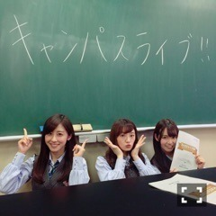
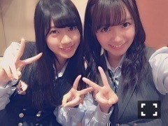

| 2016/03 13 Sun | ひめたん-0o0-その318 |


3月12日は
「キャンパスライブ@福島SP」
出演させていただきました！
東日本大震災から5年。
福島からの生放送ということで
東北の大学生の皆さんが取材してくださった
リアルな声をたくさん聞きました。
聞いて下さった皆さんと一緒に
復興のこと、私たちが今できること、
考える時間が過ごせたこと
とても貴重な機会を頂きました。
今回の番組を通して思ったのは
「実際に現場を見てほしい」という
メッセージが多かったなと。
もちろん遠くにお住いの方は
簡単に出来ることではないかもしれない、
だからこそメディアを通して
日々進化してゆく"現状"を
発信・キャッチすることの大切さを
改めて実感しました。
今日はMV集のイベント
お茶会・似顔絵会・録音会でした！
来てくださった皆さんありがとう( ˇωˇ )

そいえば新制服で登場するのは
新鮮だよね！いや、そうでもないか！
4月までイベントがなかなかないので
お会い出来て楽しかったです
次は握手会になるのかな？
アンダーライブ名古屋公演まで
一週間を切りました。
全国ツアーの初日、
そして永島聖羅卒業コンサートとなる
大切な名古屋公演。
スタートから2年、
遂に東京を飛び出して
全国の会場で歌うんだな～
アンダーライブ独特の空気感というか
"一体感"が共有できたらいいなと思いつつ、
毎公演ごとに何かを吸収していきたい。
素敵なものにできるよう頑張ります(^o^)
次いつ更新できるかわかんないから
一応お伝えしておこう。
ひめたんのサイリウムカラーは
ぴんく
×
ぴんく
です！
よろしくお願いします～♪
アンダーライブ名古屋公演限定の
Tシャツがズルい。
グアムのホテルにて、らりん姉さんと。
毎週金曜はソニレコ更新日！
3月のお当番は鈴木絢音ちゃんです
2週目分が配信されました～
チャンネル登録はこちらから。
～お知らせ～
3/18 AKB新聞
3/19 ビッグコミックスピリッツ
3/27 のぎえいご
4/10 マーキー
新しいお知らせがたくさんあります！
AKB新聞さんでは
絢音ちゃんとふたりで
アンダーライブのお話をしてきました
このツーショットは珍しいかな？
スピリッツさんは
万理華・小百合と私のなんちゃらトリオで
なんと表紙&巻頭グラビア！ありがたき！
熱海へ行ってきましたよ～＊
マーキーさんは
ソロでのインタビューは初めて。
写真もガーリーな感じになってると
思います。楽しみにしてて下さい(^o^)

そうそう、次回のらじらー！は
SKEさんと交代になりました。
3/20がSKE回、3/27が乃木坂回です。
サタデーのシゲゴリさんMC交代は
私もびっくりしました( ´ ･ω･ ` )
wktk時代から4年間も続いてて
乃木坂ちゃんもお世話になりましたもんね。
今年度はラスト2週間。
サタデーもサンデーも
よろしくお願いします！
(＊´・ω・＊)
コメント(651)
2016/03/13 23:42